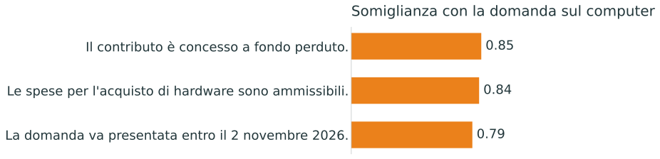
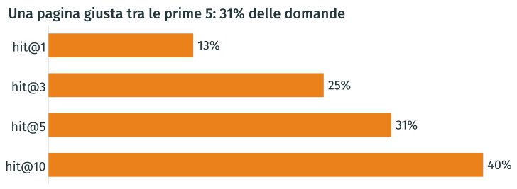
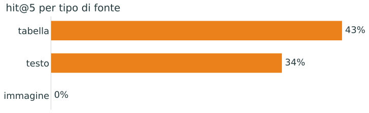
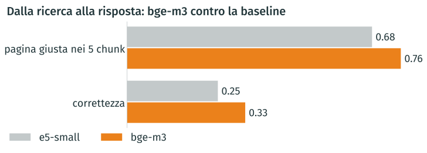
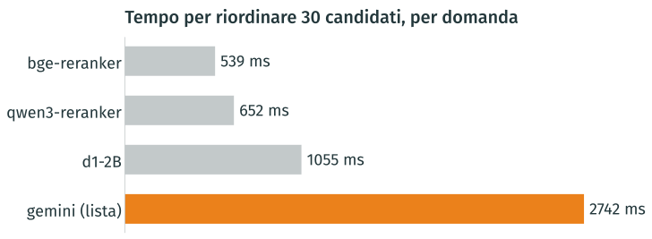

Quando si costruisce o si ottimizza un sistema software (incluso un RAG), è fondamentale misurare le prestazioni, a maggior ragione se vi è un elemento di intelligenza artificiale, che introduce variabilità e incertezza
Quindi, proveremo a:
Costruire una baseline semplice e completa, dall’inizio alla fine
Preparare un set di valutazione (golden set): domande con risposte attese
Cambiare una scelta alla volta e vedere l’impatto sulle prestazioni
Nota: non faremo in tempo a rieseguire tutti gli esperimenti, ma i risultati mostrati nelle slide derivano dall’esecuzione della pipeline. Potete riusare il codice per fare le vostre prove o come base per costruire la vostra pipeline RAG
chars = pages.text.str.len() # characters on each pagelabels = ["nessuno", "da 1 a 49", "da 50 a 499", "500 e oltre"]groups = pd.cut(chars, bins=[-1, 0, 49, 499, chars.max()], labels=labels)bar_chart(groups.value_counts(sort=False), gray=labels[2:], title=f"{sum(chars <50)} pagine su {len(pages)} hanno meno di 50 caratteri")
Un set di valutazione è un insieme di domande contenenti la risposta, i documenti e le pagine che la contengono. Serve a misurare la qualità di un sistema RAG
Per ogni domanda quindi, ci aspettiamo di avere:
Esempio
Domanda
“L’hardware è una spesa ammissibile?”
Risposta attesa
“Sì, alla voce C: macchinari e attrezzature”
Pagine “gold”
Bando, pagine 14 e 15
Pagine “gold”⟶ misuriamo la precisione del retrieval: il sistema trova le pagine giuste?
Risposta attesa⟶ misuriamo la correttezza della risposta: il sistema sa rispondere correttamente, con citazioni e senza inventare?
Input di un bando pagine + FAQGemini associa le FAQ alle pagine di supportoPer ogni FAQ pagine gold + tipo di fonte
In una richiesta per bando, Gemini riceve tutte le pagine ([P1], [P2]…) come testo o immagini, insieme a tutte le FAQ con le risposte ufficiali
model = chat_model("google_genai:gemini-4-argon")pages_by_id = label_pages(call_pages)message = labeling_message(call_faqs, pages_by_id)
NOTA: questa è una semplificazione. Ogni pagina è un blocco distinto del messaggio: testo estratto oppure immagine se contiene poco testo. Il modello riceve tutti i blocchi nella stessa chiamata
Abbiamo creato 20 domande sulle immagini con Gemini, per verificare se il sistema sia in grado di trovare le informazioni che nel testo non ci sono, come ad esempio date, importi e scadenze.
Domanda. Qual è la tariffa oraria standard per i Quadri nei costi semplificati per il personale (Azione 1.6.2) del Bando STEP?
Il nostro set è sbilanciato sul testo: tabelle e immagini sono poche; le 20 domande sulle immagini sono state generate ad hoc.
Il risultato complessivo descrive soprattutto le prestazioni sul testo
In un sistema reale, distribuire le domande in base all’uso previsto, con abbastanza esempi per tipo e metriche separate per testo, tabelle e immagini
Costruire il set in modo sistematico: campionare le fonti per tipo, raccogliere domande reali e integrare i casi mancanti con esempi sintetici da validare
Il Synthesizer di DeepEval genera domande e risposte attese da contesti testuali, anche da tabelle convertite in testo. La generazione diretta da immagini non è documentata: per i casi visivi serve una pipeline con un modello multimodale, come quella usata qui.
Domanda. Ad oggi sul sistema SFINGE compare solo la possibilità di caricare il SAL, non compare la possibilità del saldo in un’unica soluzione. Quando sarà disponibile tale possibilità per rispettare le …
Risposta attesa. Verrà fatta una puntuale verifica sulla situazione dello specifico beneficiario
48 FAQ: indicazioni operative, casi specifici, moduli e norme fuori dal corpus
Sono escluse dalle metriche di retrieval e generazione e servono a testare l’astensione
Il sistema sa dire “non lo trovo nei documenti” o fornisce una risposta non confermata dai documenti?
Saper riconoscere i limiti delle fonti è importante per l’affidabilità
In un progetto reale la verità di riferimento la costruiscono, o almeno la validano, le persone che conoscono i bandi. Etichette e domande scritte da un modello:
Possono sbagliare: pagine mancanti, “non nei documenti” errati, valori letti male
Favoriscono le domande facili per un modello
Rendono la valutazione circolare se anche il giudice è un modello simile
Qui lo usiamo così com’è, per scopo didattico:
In un progetto vero questo golden set va validato a mano almeno su un campione
Ricerca delle fonti: su 227 domande, misuriamo se il sistema trova le pagine di riferimento
Qualità delle risposte: su 50 FAQ, usiamo DeepEval e un modello giudice per valutarne correttezza e fedeltà
Astensione: confrontiamo 48 FAQ senza risposta nei documenti con 50 che ce l’hanno. Il sistema sa quando dire “non lo trovo”?
Con questo set di valutazione possiamo ora costruire la pipeline passo dopo passo e misurare l’effetto di ogni scelta su ricerca, generazione e astensione
from ragcourse.corpus import load_pagesdocs = load_pages() # one Document per page with textprint(len(docs), "pagine con testo\n")doc = docs[2536]print("metadata:", list(doc.metadata))print(doc.metadata["title"], "· pagina", doc.metadata["page"], "\n")print(doc.page_content[:230], "…")
6512 pagine con testo
metadata: ['url', 'page', 'title', 'call']
slide bando.pdf · pagina 17
Ogni documento di spesa per essere considerato ammissibile, deve essere
univocamente riconducibile al progetto finanziato.
Tutti i giustificativi di spesa, ad eccezione delle buste paga, dovranno riportare il Codice
Unico di Proge …
from langchain_text_splitters import RecursiveCharacterTextSplittersplitter = RecursiveCharacterTextSplitter(chunk_size=1000, chunk_overlap=200)chunks = splitter.split_documents(docs) # metadata are copied to every chunkprint(len(chunks), "chunk")
19782 chunk
Taglia prima ai paragrafi, poi alle righe, poi agli spazi: le frasi restano intere
Ogni chunk resta dentro la sua pagina: sappiamo sempre da dove viene
Chunk 1 · pagina 50: 50 3.5 Generazione Documento Fac-Simile Prima di procedere alla validazione e all’invio della richiesta, potete generare un documento Fac-Simile della…
Chunk 2 · pagina 51: 51 Figura 58 - Errore nella validazione: utente non abilitato Una volta effettuata la validazione della richiesta, lo stato della richiesta si aggiorn…
Chunk 3 · pagina 52: 52 Si aprirà infine la seguente finestra di conferma: Figura 60 - Conferma invio domanda ATTENZIONE - Questa è una operazione definitiva ovvero, dopo …
from ragcourse.models import embedding_modelembeddings = embedding_model("e5-small") # local, multilingual; swap it by namevector = embeddings.embed_query("Posso comprare un computer con il contributo?")print(len(vector), "numeri:", [round(x, 3) for x in vector[:5]], "…")
import numpy as npfrom ragcourse.viz import bar_chartpassages = ["Le spese per l'acquisto di hardware sono ammissibili.","Il contributo è concesso a fondo perduto.","La domanda va presentata entro il 2 novembre 2026."]similarity = np.array(embeddings.embed_documents(passages)) @ np.array(vector)bar_chart(pd.Series(similarity, index=passages).sort_values(ascending=False), title="Somiglianza con la domanda sul computer", fmt="{:.2f}")

NB: Un testo simile non contiene necessariamente la risposta
Cercare i \(k\) passaggi più vicini tra migliaia o milioni di chunk richiede più di una semplice lista:
Ricerca esatta (flat): confronta la domanda con tutti i vettori; trova sempre i vicini esatti, ma il tempo cresce linearmente col corpus
Ricerca approssimata (ANN, es. grafi HNSW): esplora solo i rami promettenti di un grafo navigabile; risponde in pochi millisecondi anche su milioni di vettori
Oltre ai vettori: servono anche testo originale, metadati (bando, documento, pagina), filtri, ricerca lessicale (BM25) e aggiornamento dei documenti
La scelta dipende da volumi di dati, riservatezza e sistemi già gestiti dall’ente:
In memoria o su file locale (FAISS, Qdrant local mode, Chroma): nessun server dedicato, adatto a sviluppo, test e corpus fino a centinaia di migliaia di chunk
Estensione di un DB già in uso (PostgreSQL + pgvector, Elasticsearch / OpenSearch): vettori e tabelle aziendali nello stesso database, riusando backup, permessi e query SQL
Server dedicato o cloud gestito (Qdrant Cloud, Pinecone, Weaviate/Milvus Cloud, Vertex AI): scalabilità e alta affidabilità gestite dal fornitore, ma con costi ricorrenti e dati esterni
question = example["question"]print(question, "\n")for doc, score in store.similarity_search_with_score(question, k=3): mark ="✓"if page_id(doc.metadata["url"], doc.metadata["page"]) in gold else" "print(f"{mark}{score:.3f}{doc.metadata['title'][:45]}, p. {doc.metadata['page']}")
Il codice CUP va messo anche nelle buste paga per il personale assunto?
✓ 0.875 Manuale di rendicontazione.pdf, p. 8
✓ 0.871 slide bando.pdf, p. 17
✓ 0.871 slide bando.pdf, p. 17
✓ = pagina gold, cioè dove sta davvero la risposta
hits = results[["hit_rate@1", "hit_rate@3", "hit_rate@5", "hit_rate@10"]]bar_chart(hits.rename(lambda m: m.replace("hit_rate", "hit")), fmt="{:.0%}", title=f"Una pagina giusta tra le prime 5: {hits['hit_rate@5']:.0%} delle domande")

Già con questa configurazione iniziale troviamo una pagina rilevante tra le prime 5 per il 31% delle domande (e al primo posto per il 13%)
Però, come vedremo, la qualità della risposta dipende anche da quale pagina viene trovata
scores = pd.DataFrame(run.scores) # ranx keeps one score per questionscores["evidence"] = [names[by_id[qid]["evidence"]] for qid in scores.index]by_evidence = scores.groupby("evidence")["hit_rate@5"].mean().sort_values(ascending=False)bar_chart(by_evidence, title="hit@5 per tipo di fonte", fmt="{:.0%}")

La ricerca testuale non vede il testo contenuto nelle immagini: servirà l’OCR o una ricerca sulle immagini
calls = pd.Series([chunk.metadata["call"] for chunk in chunks])print(calls.nunique(), "bandi nell'indice\n")# The concept, in plain Python: keep only the chunks of the right call.same_call = [chunk for chunk in chunks if chunk.metadata["call"] == example["call"]]print(len(same_call), "chunk su", len(chunks), "per il bando della domanda:")print(example["call"])
25 bandi nell'indice
399 chunk su 19782 per il bando della domanda:
avviso-per-la-concessione-di-contributi-a-favore-delle-imprese-per-progetti-di-ricerca-e-sviluppo-mediante-inserimento-di-nuovi-talenti
Quando conosciamo già il bando di interesse, conviene restringere la ricerca tramite i metadati
La somiglianza semantica viene poi calcolata solo sui documenti di quel bando
from ragcourse.filters import metadata_filtercall_filter = metadata_filter(call=example["call"]) # metadata.call == the question's callprint("Senza filtro:")show(retriever.invoke(example["question"]), example)print("\nCon filtro:")show(retriever.invoke(example["question"], filter=call_filter), example)
Senza filtro:
Manuale.pdf, p. 36 ← altro bando
Bando.pdf, p. 63 ← altro bando
ALLEGATO I_INDICATORI.pdf, p. 1 ← altro bando
Con filtro:
✓ Appendice 11_scheda di sintesi.pdf, p. 2
✓ Allegato A_fac simile domanda.pdf, p. 3
Appendice 11_scheda di sintesi.pdf, p. 1
✓ = pagina di riferimento. Il filtro usa la sintassi di Qdrant, che può essere diversa negli altri database
hits = results.loc[["hit_rate@1", "hit_rate@5", "hit_rate@10"]]was, now = hits.loc["hit_rate@5"]compare_chart(hits.rename(lambda m: m.replace("hit_rate", "hit")), fmt="{:.0%}", title=f"Una pagina giusta tra le prime 5: dal {was:.0%} al {now:.0%}")
from ranx import comparecompare(qrels, runs=[baseline, run_call], metrics=["hit_rate@5", "mrr@10"], max_p=0.01)
# Model Hit Rate@5 MRR@10
--- ---------------- ------------ --------
a baseline 0.313 0.209
b filtro per bando 0.648ᵃ 0.489ᵃ
max_p=0.01: scegliamo una soglia di significatività dell’1%
ᵃ: il filtro è migliore della baseline (a) e il test dà p ≤ 0,01
Il miglioramento medio sul nostro set è statisticamente significativo, anche se naturalmente questo non garantisce che il filtro migliori il risultato su ogni singola domanda
Dal contesto: la domanda è fatta dalla pagina del bando, o da un menu
Dalla domanda: se la nomina, un LLM può estrarre il filtro (self-query)
Non si sa: chiederlo all’utente, o cercare in tutto l’indice
Un’ipotesi favorevole
Nel nostro set ogni FAQ appartiene a un bando, quindi il bando giusto è sempre noto. In produzione va verificato: un filtro sbagliato esclude proprio le pagine giuste
Rispondi a domande sui bandi del PR FESR 2021-2027 dell'Emilia-Romagna.
Usa solo i documenti forniti. Rispondi in modo preciso, con le condizioni
e le eccezioni che contano.
Cita le fonti con il loro numero tra parentesi quadre, ad esempio [2].
Se i documenti rispondono solo in parte, rispondi con quello che dicono.
Se non contengono nulla di utile, rispondi solo: Non lo trovo nei documenti.
Fonti: chiediamo al modello di basare la risposta solo sui documenti forniti
Citazioni[n]: indicano le fonti, così chi legge può verificarle
Astensione: se i documenti non contengono nulla di utile, chiediamo una frase prestabilita, che possiamo riconoscere e contare
from langchain_core.output_parsers import StrOutputParserfrom ragcourse.models import chat_modelllm = chat_model("google_genai:gemini-3.8-flash") # swap it by name, also a local modelchain = PROMPT | llm | StrOutputParser()found = retrieve(example) # the 5 chunks of the previous deckanswer = chain.invoke({"context": format_context(found), "question": example["question"]})
Possono presentare domanda a valere su tale misura anche le microimprese?
Risposta generata
Sì, le microimprese possono presentare domanda. Rientrano tra i beneficiari previsti a condizione che:
abbiano depositato almeno un bilancio approvato oppure siano costituite [1];
abbiano l’unità locale o la sede operativa in cui si realizza il progetto nel territorio della Regione Emilia-Romagna [1].
Risposta ufficiale (FAQ)
Ai sensi del punto 2 dell’Avviso possono presentare domanda anche le microimprese, nel rispetto dei requisiti di ammissibilità previsti dall’Avviso.
from pydantic import BaseModelclass Verdict(BaseModel): # what the judge must return correct: bool reason: strjudge = chat_model(JUDGE_MODEL).with_structured_output(Verdict)verdict = judge.invoke(f"Domanda: {example['question']}\nRisposta ufficiale: {example['answer']}\n"f"Risposta da valutare: {answer}\nÈ corretta rispetto a quella ufficiale?")print("Corretta:", verdict.correct, "\n", verdict.reason)
Corretta: True
La risposta conferma correttamente che le microimprese possono presentare domanda e specifica alcuni dei requisiti di ammissibilità previsti, risultando pienamente conforme e coerente con la risposta ufficiale.
Qui usiamo come giudice lo stesso modello che genera la risposta: può avere preferenze simili a quelle del generatore. Possiamo scegliere anche un modello diverso
Il giudizio appena visto è sì o no, con una motivazione. Con DeepEval organizziamo questi controlli in casi di test, metriche e risultati confrontabili
DeepEval organizza la valutazione della nostra pipeline in tre elementi
1. Casi
Domande
risposte prodotte
passaggi recuperati
Una risposta attesa (opzionale)
2. Metriche
Ogni metrica controlla un aspetto preciso, usando un giudice configurabile
3. Risultati
Punteggi e motivazioni per caso, da confrontare quando cambiamo la pipeline
Per confrontare due versioni della pipeline usiamo gli stessi casi e gli stessi criteri, registrando il modello giudice scelto
Riprende le metriche introdotte da RAGAS (Faithfulness, Answer Relevancy, Contextual Recall), integrandole con test di regressione (pytest) e criteri personalizzabili (GEval)
from deepeval.test_case import LLMTestCasecase = LLMTestCase(input=example["question"], actual_output=answer, expected_output=example["answer"], retrieval_context=[ chunk.page_content for chunk in found ],)
Domanda dell’utente
Risposta della pipeline
Riferimento: la FAQ ufficiale
Contesto: i chunk recuperati
Il riferimento serve per confrontare la risposta con la FAQ ufficiale. Per valutarne la fedeltà ai chunk bastano domanda, risposta e contesto
Per Faithfulness, il test passa se il punteggio è ≥ soglia. Lo 0,8 è un punto di partenza didattico: va verificato su esempi reali.
Preparare un validation set di risposte generate e relativi contesti recuperati
Far etichettare agli esperti le risposte come fedeli o non fedeli al contesto
Calcolare il punteggio DeepEval sugli stessi esempi e provare più soglie
Contare le risposte non fedeli promosse e quelle fedeli bocciate
Scegliere in base al costo dei due errori e verificare su un test set separato
La fedeltà riguarda il supporto nel contesto, non la correttezza rispetto alla FAQ. La soglia decide l’esito del test: non modifica la risposta e non attiva da sola l’astensione del sistema.
from deepeval.metrics import FaithfulnessMetricfrom deepeval.test_case import LLMTestCasefrom ragcourse.judge import judge_modelinvented = answer +" Il contributo massimo è di 5 milioni di euro."# a claim we made upcase = LLMTestCase(input=example["question"], actual_output=invented, retrieval_context=[chunk.page_content for chunk in found])faithfulness = FaithfulnessMetric(model=judge_model(JUDGE_MODEL), # any LangChain model penalize_ambiguous_claims=True, async_mode=False)faithfulness.measure(case)
✓ nei documenti Le microimprese possono presentare domanda e rientrano tra i beneficiari [...]
✗ contraddetta Il contributo massimo concedibile è di 5 milioni di euro.
Fedeltà = frasi nei documenti / frasi = 0.50
Con penalize_ambiguous_claims=True penalizziamo anche le affermazioni non verificabili
Il giudice confronta ogni affermazione della risposta con i chunk recuperati:
Confermata: i chunk confermano l’affermazione
Contraddetta: i chunk riportano un’informazione incompatibile
Non verificabile: i chunk non contengono abbastanza informazioni per confermarla o smentirla
Per esempio, se la risposta indica 5 milioni di euro ma i chunk non indicano alcun importo, l’affermazione non è verificabile
Per impostazione predefinita DeepEval penalizza solo le contraddizioni esplicite, mentre qui scegliamo di penalizzare anche le affermazioni che non trovano riscontro nei chunk recuperati
La fedeltà controlla l’insieme dei chunk recuperati, non se i rimandi [1], [2] puntano al passaggio giusto:
Validità formale: gli indici [n] citati rientrano tutti nei \(k\) chunk forniti (1 ≤ n ≤ k)?
Precisione: la frase è sostenuta proprio dal chunk [n] citato (FaithfulnessMetric sui soli chunk citati)?
Pertinenza della fonte: i chunk citati provengono dalle pagine gold della domanda?
from ragcourse.chat import citedindices = cited(answer, found) # valid citations in 1..len(found)cited_chunks = [found[n -1] for n in indices] # only the passages the answer actually citesprint("Chunk citati:", indices, "· pagina gold citata:", gold_found(cited_chunks, example))
Chunk citati: [1] · pagina gold citata: True
Sulle 28 risposte date nelle 50 FAQ: 100% di citazioni valide (1..5); se la pagina gold è nei 5 chunk, è citata 20 volte su 21
from deepeval.metrics import GEvalfrom deepeval.test_case import SingleTurnParamscorrectness = GEval( name="Correttezza", evaluation_params=[SingleTurnParams.INPUT, SingleTurnParams.ACTUAL_OUTPUT, SingleTurnParams.EXPECTED_OUTPUT], evaluation_steps=["Check whether the facts in the actual output contradict the expected output.","Penalize omissions of key facts of the expected output.","Other wording and extra details that do not contradict it are fine.", ], model=judge_model(JUDGE_MODEL),)
Per la fedeltà abbiamo usato una metrica predefinita.
Con GEval definiamo i criteri di correttezza rispetto alla FAQ ufficiale
Passiamo dal singolo caso al confronto su un insieme fisso di domande
sample = pd.DataFrame(faq).sample(50, random_state=0).to_dict("records")found_all = [retrieve(q) for q in sample] # one at a time: the local model stays deterministicinputs = [{"context": format_context(found), "question": q["question"]}for q, found inzip(sample, found_all, strict=True)]with get_usage_metadata_callback() as generation_usage: # count the tokens answers = chain.batch(inputs, config={"max_concurrency": 8}) # 8 requests at a time
50 FAQ estratte a caso: le risposte ufficiali sono scritte da persone
batch: le chiamate al modello partono in parallelo, il retrieval resta sequenziale
Un modello più capace interpreta meglio gli stessi passaggi, ma il richiamo del contesto resta invariato (0,11) perché dipende esclusivamente dal retrieval
Gemma (pesi aperti, via API), giudice Flash. Fedeltà e pertinenza sono calcolate sulle 29 risposte comuni ai tre modelli
ContextualRecallMetric non legge la domanda e richiede che ogni frase della FAQ compaia nei chunk: passando anche la domanda a context_coverage_metric, sulle 34 domande con pagina giusta la copertura sale da 0,13 a 0,61 (e su tutte le 50 da 0,10 a 0,46)
Stessi 5 chunk e stesso giudice (Gemini Flash). I casi a zero scendono da 41 a 10 su 50
È ammissibile l’assunzione dei nuovi ricercatori tramite contratto di apprendistato?
Risposta generata
I documenti non menzionano nello specifico il contratto di apprendistato. Tuttavia, specificano che l’assunzione del nuovo ricercatore deve avvenire obbligatoriamente con contratto di lavoro dipendente, subordinato e a tempo pieno, secondo una delle seguenti tipologie [1], [3]: - a tempo indeterminato; - a tempo determinato con una durata pari o superiore a due anni [1], [3].
Risposta ufficiale (FAQ)
Come previsto nella precisazione al paragrafo 3.2 dell’Avviso , il contratto di apprendistato è una tipologia contrattuale non ammessa
Fedeltà 1.0, correttezza 0.2. Il giudice: The actual output directly contradicts the expected output by claiming that the documents do not specifically mention the apprenticeship contract, whereas the expected output explicitly notes that paragraph 3.2 of the Notice […]
⚠️ Attenzione: una risposta fedele ai chunk può essere incompleta o scorretta
Questa valutazione si svolge in fase di analisi: il giudice non serve normalmente per ogni risposta in produzione, ma può essere usato per il monitoraggio
Anche il giudice può sbagliare: è utile controllarne i risultati a campione
Si possono valutare modelli più piccoli o decision model (come Jev e LiquidAI d1), potenzialmente meno costosi (qui non li abbiamo provati come giudici)
Una cache riutilizza le risposte delle chiamate identiche già eseguite
questions = answerable + unanswerable # 50 with the answer in the documents, 48 withouthas_answer = pd.Series([bool(q["gold"]) for q in questions])found_all = [retrieve(q) for q in questions]inputs = [{"context": format_context(f), "question": q["question"]}for q, f inzip(questions, found_all, strict=True)]answers = chain.batch(inputs, config={"max_concurrency": 8})abstained = pd.Series([a.startswith(ABSTAIN) for a in answers])pd.crosstab(has_answer.map({True: "risposta nei documenti", False: "non nei documenti"}), abstained.map({True: "si astiene", False: "risponde"})).rename_axis(index=None, columns=None)
Attuale: Se i documenti rispondono solo in parte, rispondi con quello che dicono.
Se non contengono nulla di utile, rispondi solo: Non lo trovo nei documenti.
Prudente: Se i documenti non contengono la risposta completa, rispondi solo: Non lo trovo nei documenti.
Le istruzioni, i documenti e le domande restano gli stessi
cambia solo il criterio con cui il modello decide se astenersi
⚠️ Attenzione: il prompt prudente si astiene più spesso quando la risposta manca, ma anche quando è presente nei documenti: riduce il rischio di risposte non confermate, al costo di rinunciare a più risposte utili
L’estratto conto bancario è un documento obbligatorio per la rendicontazione delle spese?
Risposta generata
Sì, l’estratto conto bancario è richiesto per la rendicontazione delle spese e deve rispettare precise condizioni: * Deve essere completo, integro e leggibile, comprensivo dell’operazione di addebito opportunamente evidenziata; le sole liste movimenti non sono considerate valide come quietanze di pagamento [1]. * Deve rendere visibili [2]: * l’intestatario del conto corrente; * il riferimento al pagamento; * […]
Risposta ufficiale (FAQ)
Qualora il beneficiario – per ragioni esclusivamente temporali – non sia in grado di produrre in istruttoria l’estratto conto bancario, sarà possibile accettare, in alternativa, la lista movimenti purchè riporti tutte le informazioni necessarie per ricondurre univocamente il documento al beneficiario intestatario del conto ed indichi il numero/i ID del bonifico/i rendicontato.
Fedeltà 0.5: la regola generale è nei documenti, l’eccezione ammessa dall’ufficio no.
Il testo dei bandi e le prassi operative non sempre coincidono: in un sistema in produzione converrebbe indicizzare anche le FAQ, che qui teniamo separate solo per usarle come test
per cittadini e imprese è preferibile un comportamento più prudente, con un rimando agli uffici
per il personale interno può essere utile anche una risposta parziale, purché accompagnata dalle fonti
Modificando il prompt possiamo solo scegliere tra poche formulazioni fisse, mentre modelli dedicati (decision model, come Jev o LiquidAI d1) stimano una probabilità su cui fissare una soglia continua
Ogni modifica al retrieval cambia i passaggi forniti al modello e va quindi rivalutata anche sull’astensione, misurando insieme la capacità di astenersi e la percentuale di risposte utili
Domanda + bandoRetrieval k chunkRerankingGenerazione LLMRisposta
Finora abbiamo passato 5 chunk al modello. Aumentare il numero di chunk alza la probabilità di includere le informazioni giuste, ma introduce anche più testo irrilevante e aumenta i costi
def answer_with(k: int):"""Every answer, with k chunks in the prompt; also counts the tokens.""" retriever = store.as_retriever(search_kwargs={"k": k}) found = [retriever.invoke(q["question"], filter=metadata_filter(call=q["call"]))for q in questions] inputs = [{"context": format_context(f), "question": q["question"]}for q, f inzip(questions, found, strict=True)]with get_usage_metadata_callback() as usage: answers = chain.batch(inputs, config={"max_concurrency": 8})return answers, found, usageresults, tokens, generated = {}, {}, {}for k in (5, 10, 20): answers, found, usage = answer_with(k) generated[k] = answers, found results[f"{k} chunk"] = score(answers, found) # DeepEval + abstention, as before tokens[f"{k} chunk"] =sum(u["input_tokens"] for u in usage.usage_metadata.values())results = pd.DataFrame(results)
Stesse 98 domande dei due capitoli precedenti: 50 con risposta, 48 senza
score(...): correttezza e fedeltà con DeepEval, astensione con la frase fissa
Con la metrica di copertura vista nel capitolo sulla generazione (context_coverage_metric), passando da 5 a 10 e 20 chunk la copertura stimata sale da 0,46 → 0,57 → 0,64, e i casi a zero scendono da 10 a 5
Stessi contesti salvati (5, 10, 20 chunk) e stesso giudice (Gemini Flash) sulle 50 FAQ
Chunk piccoli: ciascun vettore rappresenta un singolo concetto e la ricerca è più mirata, ma si rischia di spezzare informazioni collegate
Chunk grandi: conservano più contesto, ma un singolo vettore deve riassumere argomenti diversi
Limite di lunghezza: ogni modello di embedding ha un numero massimo di token oltre il quale il testo viene troncato
limit = embeddings._client.max_seq_length # e5-small: tokens it reads, the rest is ignoredtokenizer = embeddings._client.tokenizertokens = pd.Series([len(tokenizer(d.page_content)["input_ids"]) for d in docs])print(f"e5-small legge {limit} token: {(tokens > limit).mean():.0%} delle pagine è più lunga")
e5-small legge 512 token: 43% delle pagine è più lunga
Gli embedding dei chunk si calcolano una volta e si riusano nelle ricerche. Se cambiano i chunk (testo, dimensione o sovrapposizione) oppure il modello di embedding, si ricalcolano i vettori interessati e si aggiorna l’indice.
from ragcourse.index import vector_storechunkings = {"500": RecursiveCharacterTextSplitter(chunk_size=500, chunk_overlap=100).split_documents(docs),"1000": RecursiveCharacterTextSplitter(chunk_size=1000, chunk_overlap=200).split_documents(docs),"2000": RecursiveCharacterTextSplitter(chunk_size=2000, chunk_overlap=400).split_documents(docs),"pagina": docs, # no split: one page, one vector}pd.Series({name: len(chunks) for name, chunks in chunkings.items()}, name="chunk").to_frame().T
500 e 1000 caratteri danno risultati simili: hit@5 65,6% e 64,8%. Il paired test non rileva una differenza significativa (p = 0,73). Teniamo 1000: meno vettori da memorizzare e cercare
La pagina intera scende al 59,0%. Un vettore deve rappresentare più argomenti; inoltre il 43% delle pagine supera il limite di token del modello
In questo confronto il chunking cambia poco tra 500 e 1000 caratteri: il prossimo esperimento riguarda il modello di embedding
Verificare che una modifica non porti miglioramenti significativi è comunque utile: ci permette di mantenere la configurazione più semplice ed economica.
Tutti i modelli si usano allo stesso modo, con embedding_model("nome"), perché condividono l’interfaccia di LangChain. Esistono anche modelli specializzati per settore (giuridico, medico, finanziario), ma sono addestrati quasi sempre su testi in inglese: per i documenti amministrativi in italiano conviene di solito un buon modello multilingua che accetti testi lunghi
from ragcourse.models import embedding_model, query_msnames = ["e5-small", "e5-large", "bge-m3", "qwen3-0.6b", "google_genai:gemini-embedding-2"]runs, latency = {}, {}for name in names: short = name.split(":")[-1] # e.g. "gemini-embedding-2" embeddings = embedding_model(name) # local or API: the same LangChain interface store = vector_store(chunks, embeddings, f"{short}-1000") # embedded once, on disk retriever = store.as_retriever(search_kwargs={"k": 20}) runs[short] = retrieval_run(retriever, with_pages, name=short, by_call=True) questions = [q["question"] for q in with_pages[:50]] latency[short] = query_ms(name, questions) # ms to embed one question, timed once store.client.close() # free the memory before the next index
Ogni indice si calcola una volta sola e resta su disco: vector_store(...)
# The generation deck again (50 questions, 5 chunks, DeepEval), changing only the index.end_to_end = pd.DataFrame({name: correctness_with(name) for name in ["e5-small", contender]})

Stesse 50 domande del capitolo sulla generazione, 5 chunk, stesso prompt e stesso giudice: cambia solo l’indice
bge-m3 è il migliore: hit@5 74%, +10 punti sulla baseline
Un modello locale vale l’API: gemini-embedding-2 arriva a 73%, ma impiega 467 ms a domanda contro 14
Correttezza delle risposte: 0.25 → 0.33 cambiando solo l’embedding
In questo caso il passaggio a un modello di embedding più adatto al multilingua e ai testi lunghi migliora sensibilmente sia il retrieval sia le risposte generate, pur restando in locale
Partendo dalla nuova configurazione di riferimento (bge-m3, chunk da 1000 caratteri e filtro per bando), affianchiamo alla ricerca semantica quella per parole chiave
Poiché la ricerca semantica e quella lessicale hanno punti di forza complementari, combinarle può aiutare a gestire sia le parafrasi sia i termini tecnici esatti
def rrf(*rankings, k=60):"""Reciprocal Rank Fusion: an item rises if it is high in any list.""" scores = {}for ranking in rankings:for position, item inenumerate(ranking, start=1): scores[item] = scores.get(item, 0) +1/ (k + position)returnsorted(scores, key=scores.get, reverse=True)rrf(["p40", "p12", "p7"], # by meaning ["p12", "p3", "p40"]) # by words
['p12', 'p40', 'p3', 'p7']
La formula usa solo la posizione in classifica e non i punteggi grezzi, che nei due metodi hanno scale non confrontabili
Qdrant esegue direttamente questa fusione durante la ricerca con RetrievalMode.HYBRID
La ricerca per parole da sola raggiunge un hit@5 del 64%: una baseline economica, senza GPU, da provare
L’ibrida aggiunge circa 2 punti percentuali a bge-m3: alcune domande guadagnate, altre perse. Il paired test non rileva una differenza significativa (p = 0,42)
Combinare parole e significato offre candidati diversi al reranker: usiamo l’ibrida come punto di partenza del prossimo esperimento
Su questo corpus il contributo aggiuntivo delle parole è limitato: conviene misurarne l’effetto sui propri dati.
Analizzare insieme domanda e documento permette una valutazione più accurata della rilevanza, ma richiede troppo tempo per essere applicato all’intero indice
def rerank(question, candidates, score, top_n=10):"""Reorder the candidates by a finer score, keep the best.""" scores = score(question, candidates) # one number per candidate: higher = more useful best =sorted(range(len(candidates)), key=lambda i: scores[i], reverse=True)return [candidates[i] for i in best[:top_n]]
score è il pezzo che cambia: quattro modelli diversi, stessa interfaccia
In LangChain: RerankRetriever(base=..., scorer=..., top_n=10) è un retriever come gli altri
I decision model rispondono a domande sì/no con una probabilità, in un solo passaggio. Jev (TypeSafe AI) è un decision model via API, integrato in DeepEval come TypeSafeModel
from ragcourse.rerank import (CachedRetriever, RerankRetriever, cross_encoder, decision_model, llm_listwise)listwise_chat = chat_model(CHAT_MODEL, thinking_level="low", timeout=60, max_retries=3)rerankers = { # loaded one at a time, to share the GPU"bge-reranker": lambda: cross_encoder("bge-reranker-v2-m3"),"qwen3-reranker": lambda: cross_encoder("qwen3-reranker-0.6b"),"d1-2B": decision_model,"gemini (lista)": lambda: llm_listwise(listwise_chat),}candidates = CachedRetriever(base=hybrid.as_retriever(search_kwargs={"k": 30})) # search once
runs = {}for name in ["nessuno", *rerankers]:if name =="nessuno": retriever = hybrid.as_retriever(search_kwargs={"k": 10}) # as before: no rerankingelse: # timed(...): also records how long each reranking takes retriever = RerankRetriever(base=candidates, scorer=timed(name, rerankers[name]()), top_n=10) runs[name] = retrieval_run(retriever, with_pages, name=name, by_call=True)del retriever free_gpu() # "nessuno": the 10 hybrid chunks; the others: best 10 of 30 candidates
Qwen3 gira sulla GPU locale: nessun costo API, ma più candidati richiedono più tempo
Gemini: 50 candidati costano circa 2,5 volte 20, senza un guadagno di hit@5 rispetto a 30
Tempi di solo scoring su RTX 4070. Costi Gemini stimati dai token, per esecuzioni senza cache. Per questa prova la nuova spesa stimata è 2,88 USD: le 227 chiamate a 30 candidati erano già salvate.
reranked = RerankRetriever(base=candidates, scorer=rerankers[best](), top_n=10)end_to_end = pd.DataFrame({"nessuno": correctness_with(hybrid.as_retriever(search_kwargs={"k": 10})), best: correctness_with(reranked), # same 10 chunks to the model, in a better order})

Stesse 50 domande, 10 chunk al modello, stesso prompt e stesso giudice: cambia solo quali 10 chunk arrivano al modello
gemini (lista) è il migliore: hit@5 86% contro 77% e la prima pagina giusta al primo posto nel 68% dei casi (era 46%). Ma costa 2.6 s a domanda, via API
I reranker locali migliorano soprattutto il primo posto (bge: hit@1 55%) in circa mezzo secondo, sulla nostra GPU
d1-2B, con la nostra domanda sì/no, non migliora la classifica (hit@5 74%): il suo terreno sono le decisioni, come rispondere o no
Le risposte: correttezza 0.44 → 0.51
Il reranking può migliorare l’ordine dei passaggi recuperati e la qualità delle risposte, ma introduce una latenza aggiuntiva che va valutata in base ai tempi di risposta richiesti
print(len(visual_pages(pages)), "pagine con meno di 50 caratteri di testo, su", len(pages))print(len(on_images), "domande la cui risposta sta in una di queste pagine\n")store = vector_store(chunks, embeddings, "bge-m3-1000-bm25", sparse=bm25) # the baselineretriever = store.as_retriever(search_kwargs={"k": 20})before = retrieval_run(retriever, on_images, name="senza OCR", by_call=True)print(f"Oggi una pagina giusta tra le prime 5: {evaluate(qrels_images, before, 'hit_rate@5'):.0%}")store.client.close()
476 pagine con meno di 50 caratteri di testo, su 6652
20 domande la cui risposta sta in una di queste pagine
Oggi una pagina giusta tra le prime 5: 5%
Se il testo di una pagina non viene estratto in fase di parsing, quella pagina non entra nell’indice e non potrà essere recuperata da alcun modello di ricerca testuale
Nei documenti reali contano anche tabelle a più colonne, moduli, intestazioni e note:
Approccio
Strumenti tipici
Che cosa restituisce
Quando serve
Solo testo
PyMuPDF (fitz), pypdf
Flusso di caratteri del PDF, senza struttura
Testi discorsivi e bandi con impaginazione semplice
OCR classico
Tesseract, EasyOCR
Testo riga per riga dall’immagine della pagina
Scansioni di testo semplice, su CPU
Parsing strutturato
Docling, Marker, Unstructured
Markdown / JSON con sezioni e tabelle ricostruite
Tabelle complesse, bilanci, impaginazione su più colonne
Modelli visivi (VLM)
Qwen3-VL, Gemini Flash
Testo o Markdown letto guardando la pagina
Slide, infografiche e scansioni difficili
Il Markdown strutturato permette di dividere i chunk seguendo le sezioni logiche e di non spezzare le righe delle tabelle
Qui non usiamo un parser strutturato perché le regole dei bandi FESR sono per lo più in elenchi e paragrafi, e sulle slide-immagine confrontiamo direttamente OCR e modelli visivi
Tesseract: o significativo: a) spese per progettazione, direzione lavori, collaudo e certificazione degli impianti; b) spese gererali. Irmoltre, si ritengono assolti ex-ante | requisiti DNSH per: c) spese per la fornitura dei materiali e […]
Qwen3-VL-2B: nno significativo: a) spese per progettazione, direzione lavori, collaudo e certificazione degli impianti; b) spese generali. Inoltre, si ritengono assolti ex-ante i requisiti DNSH per: c) spese per la fornitura dei materiali […]
Gemini Flash: nno significativo: a) spese per progettazione, direzione lavori, collaudo e certificazione degli impianti; b) spese generali. Inoltre, si ritengono assolti ex-ante i requisiti DNSH per: c) spese per la fornitura dei materiali […]
Tesseract scrive “gererali”, “Irmoltre”: errori che la ricerca per parole non perdona
Le pagine-immagine tornano trovabili: domande sulle immagini dal 5% al 95%, e +7 punti di hit@5 su tutte le 227 domande: le pagine lette si aggiungono, il resto dell’indice non cambia
Per trovare la pagina i tre lettori si equivalgono: anche Tesseract, gratuito e senza GPU
Per rispondere la qualità del testo può contare di più: lo vediamo nel prossimo capitolo
Attenzione: queste domande le ha scritte Gemini leggendo il testo delle pagine. Domande su grafici e schemi non ci sono: lì l’OCR non è stato messo alla prova
Prima ancora di intervenire sui modelli di ricerca, è quindi importante verificare che tutte le pagine rilevanti del corpus vengano effettivamente lette e indicizzate
Un modello di embedding multimodale rappresenta testi e immagini nello stesso spazio vettoriale, permettendo di confrontare una domanda testuale con le immagini delle pagine
Non serve trascrivere il testo: vengono preservati tabelle, grafici e impaginazione della pagina
In fase di generazione, il modello multimodale riceve direttamente le immagini delle pagine recuperate
from ragcourse.visual import PictureEmbeddingspictures = PictureEmbeddings() # Qwen3-VL-Embedding-2B, local GPUexamples = [q for q in on_images if q["id"] in ("img-016", "img-001", "img-009")]pages_shown = [by_page[page_id(q["gold"][0]["url"], q["gold"][0]["page"])] for q in examples]page_vectors = np.array(pictures.embed_pictures(pages_shown)) # images in...question = np.array(pictures.embed_query(examples[0]["question"])) # ...text insimilarity = pd.Series(page_vectors @ question, index=[f"{p['title'][:30]}, p. {p['page']}"for p in pages_shown])
Nel Bando Energia Imprese, quale percentuale minima in peso dei rifiuti da costruzione e demolizione deve essere avviata al riciclo per considerare assolti ex-ante i requisiti DNSH?
from ranx import fuse# Reciprocal Rank Fusion, the same idea as the hybrid search, between two indexes.fused = complete(fuse([text_run, picture_run], method="rrf"), "testo + immagini")runs = {run.name: run for run in [text_run, ocr_run, picture_run, fused]}results = pd.DataFrame({name: evaluate(qrels, run, ["hit_rate@5", "mrr@10"])for name, run in runs.items()}) # all 227 questions# ranx keeps a score per question: average the 20 on pictures.hit5 = pd.Series({name: pd.Series(run.scores["hit_rate@5"])[image_ids].mean()for name, run in runs.items()})
from ragcourse.generation import picture_messagesdef from_pictures(q):"""Answer looking at the 3 best page pictures, with the usual rules.""" found = picture_retriever.invoke(q["question"], filter=metadata_filter(call=q["call"])) seen = [by_page[page_id(d.metadata["url"], d.metadata["page"])] for d in found[:3]]return llm.invoke(picture_messages(q["question"], seen)).text
Compare con le risposte del capitolo sulla generazione: 10 chunk di testo dagli indici con OCR
Stesse 20 domande, stesso giudice (DeepEval, correttezza)
Trovare: l’indice delle immagini trova la pagina giusta nel 100% delle domande sulle immagini, senza leggere una parola
Rispondere: guardare la pagina (0,95) vale quanto un buon OCR (0,97), mentre un OCR con errori ottiene un punteggio più basso (0,88)
Costi: 2.396 token in ingresso per risposta con 10 chunk di testo contro 3.452 con 3 immagini (e l’indice delle immagini richiede una GPU)
In pratica: conviene usare l’OCR come base perché è semplice e compatibile con la ricerca testuale, riservando le immagini ai casi in cui contano impaginazione, tabelle e grafici
L’estrazione del testo con OCR e l’uso diretto delle immagini sono due approcci alternativi: la scelta dipende da quanto contano elementi visivi come tabelle e grafici e dai costi sostenibili
Usando le pagine complete e un generatore più capace la correttezza media sul campione sale da 0,538 a 0,592, anche se su 50 domande il margine di incertezza resta ampio
Con due interventi mirati la correttezza sale a 0,59 (Flash) e 0,63 (Argon). Sulle FAQ la cui risposta è scritta nei bandi arriviamo a 0,81, e rispetto ai soli documenti recuperati a 0,95: nelle prossime slide vediamo da dove vengono questi numeri
Guardando le risposte sbagliate sono emersi due problemi ricorrenti, che abbiamo corretto senza cambiare l’indice. Con le pagine complete, la correttezza passa da 0,538 a 0,590 con Flash e da 0,592 a 0,628 con Argon.
1. Ogni passaggio dice da dove viene. Un chunk isolato spesso non nomina il bando o il documento a cui appartiene. Mettiamo titolo e pagina davanti al testo, sia per il reranker sia per il generatore:
[Avviso.pdf, p. 10]
Le spese devono essere riconducibili alle seguenti categorie:
A. Spese per nuovi addetti impiegati in attività di Ricerca e Sviluppo ...
2. Il prompt permette di trarre conclusioni. Molte FAQ chiedono un caso che il bando non nomina, ma che una sua regola include o esclude. Al prompt aggiungiamo:
Se i documenti definiscono un elenco tassativo o una regola generale che include o esclude il caso chiesto, trai esplicitamente la conclusione (sì o no) citando la regola.
Abbiamo classificato a mano le 50 FAQ in base a dove si trova la loro risposta:
Tipo di FAQ
Quante
Esempio
Correttezza (Argon)
Risposta scritta nei bandi
28
requisiti, scadenze, importi indicati nel testo
0,77 → 0,81
Deduzione da una regola
13
un ex collaboratore occasionale conta come «nuovo addetto»? Il bando definisce solo i nuovi addetti
0,37 → 0,42
Fonti esterne o refusi
9
una legge regionale non presente nel corpus, un refuso del bando corretto solo nella FAQ
0,37 → 0,37
Il prompt deduttivo aiuta soprattutto Flash: sulle 13 FAQ deduttive passa da 0,29 a 0,42. Sulle 9 FAQ con fonti esterne nessun intervento sulla pipeline basta, perché l’informazione non è nei documenti indicizzati. Valutando le risposte solo rispetto ai documenti recuperati (grounded_correctness_metric) il punteggio sale a 0,95: l’errore residuo dipende soprattutto da ciò che manca nel corpus.
Attenzione: questa metrica non sostituisce la correttezza rispetto alla FAQ ufficiale: una risposta fedele ai documenti può comunque essere incompleta per chi chiede.
La nostra pipeline cerca sempre, una volta sola, e poi risponde. In un agente è il modello a decidere se cercare, con quale domanda e quante volte. LangChain trasforma lo stesso retriever in uno strumento con poche righe:
from langchain.agents import create_agentfrom langchain_core.tools import create_retriever_toolcerca = create_retriever_tool(retriever, name="cerca_documenti", description="Cerca nei documenti del PR FESR 2021-27")agente = create_agent(chat_model(), tools=[cerca], system_prompt=REGOLE)
Più ricerche: se i primi chunk non bastano, l’agente riformula la domanda e cerca di nuovo
Filtro scelto dal modello (self-query): uno strumento con un parametro bando lascia al modello la scelta del filtro
Costi e controllo: ogni passaggio è una chiamata al modello in più, e le scelte dell’agente vanno valutate come quelle della pipeline
Stesso retriever (ibrido, filtro per bando, 10 chunk per ricerca), stesso modello e stesso giudice: l’agente risponde meglio in 28 domande su 50 e peggio in 6
Il prezzo è nelle ricerche: in media 6 per domanda (fino a 21), con circa 5 volte più testo letto dal modello